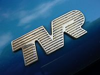

Компанії, що спеціалізуються в основному
тільки на спортивних моделях (спортивні купе,
родстери) і виробляють їх невеликими серіями:
| |
|
|
| Lamborghini - італійська компанія, виробник спортивних авто |
Bugatti - французька автомобілебудівна компанія,
що спеціалізується на випуску легкових автомобілів класу «люкс» |
MG - британська автомобілебудівна компанія |
 |
|
 |
| Maserati - італійська компанія, що спеціалізується на випуску комфортабельни
х спортивних автомобілів з ефектною зовнішністю і високими динамічними показниками. |
Pagani Automobili SpA — італійський виробник спорткарів. |
TVR — незалежна британська автомобілебудівна компанія. Компанія виробляє легкі спортивні автомобілі. |
| |
|
 |
| Alfa Romeo - італійський виробник автомобілів, автобусів, локомотивів,
трамваїв, яхт та промислового обладнання. |
Ferrari S.p.A. — італійська компанія, що виготовляє спортивні автомобілі |
Aston Martin — з 1913 року англійський виробник автомобілів. |